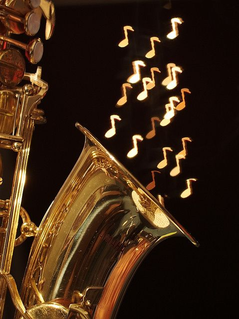
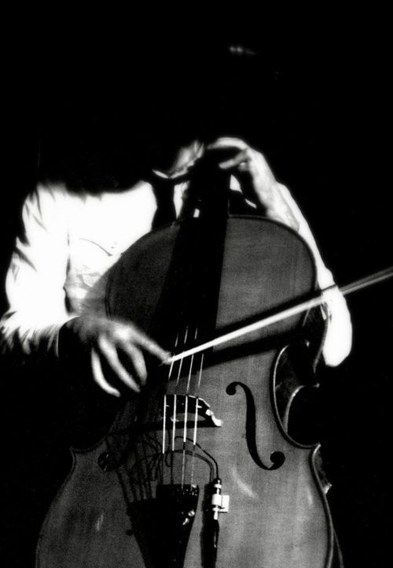

#
Título
- Álbum -
Duración
Por qué esta selección
La ciencia detrás de esta playlist
Se priorizan piezas de baja intensidad, tempo estable y estructuras repetitivas que pueden favorecer un entorno auditivo menos estimulante.

Menor activación, no una fórmula
No se trata de canciones "diseñadas para regular la respiración". Se seleccionan por presentar características asociadas con menor activación: tempo moderado/lento, repetición, texturas suaves y menor agresividad rítmica.

Evidencia consistente
Una revisión y metaanálisis de 2024 con 11 ensayos controlados y 1,204 pacientes encontró que las intervenciones musicales redujeron significativamente la ansiedad.

Efecto real, pero variable
Una revisión de 51 estudios encontró un efecto medio sobre la ansiedad autoinformada, pero el efecto sobre indicadores fisiológicos fue pequeño y no significativo: la respuesta varía entre personas.

Una nota de honestidad
El concepto de 432Hz se usa aquí como característica de la playlist, no como tecnología científicamente demostrada. La evidencia sólida respalda la escucha musical como intervención en general, no una superioridad de una frecuencia sobre otra.
Basado en investigación sobre percepción musical y emoción (PubMed).